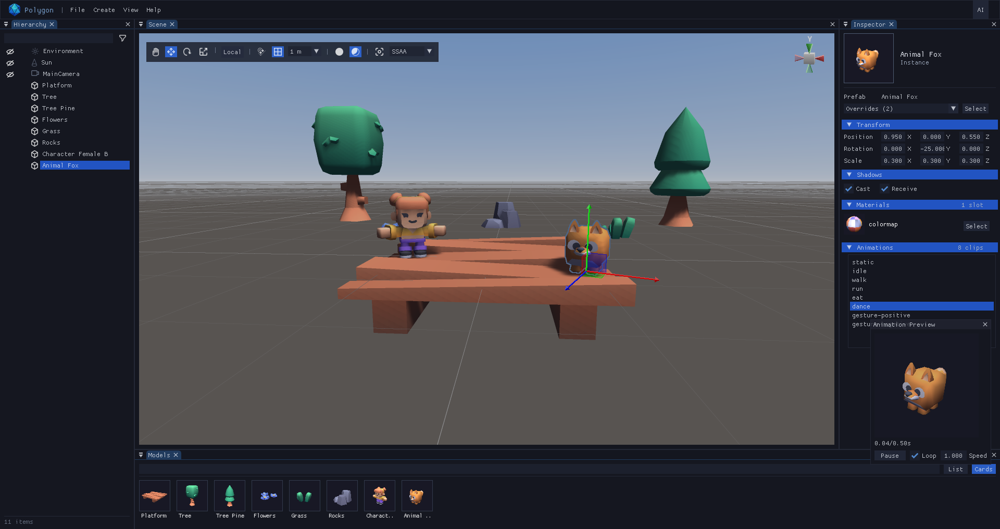

In-game editing
Toggle with F1. The gateway steps the live world while the editor is closed.

A 3D editor for GameMaker. Plug it into your project and build, edit, and save your scenes without leaving your game.

Features
No external tools. Press F1 and edit right inside the running game.
Toggle with F1. The gateway steps the live world while the editor is closed.
Translate, rotate and scale on world or local axes, with drag planes.
Filter and rename (F2), focus (F), per-axis transform rows.
Hidden objects, skybox and selection outline toggles.
Snapshot history that restores the selection too.
One descriptor per placement. Save, load, new.
Bind a model to a GameMaker object: instances spawn companions that drive their node.
Per-light setup, coverage preview and a global toggle.
Position and rotation snap, arrow-key nudge, all undoable.
Workflow
Import the package, create one object, hand it your world. The editor is editor-only: your game keeps shipping as it is.
Drag
editor.yymps
onto the GameMaker IDE to import the scripts. You also need
GMRT 0.22.4 from the Package Manager, which
provides GM3D_* and ImGui.
Add the editor-only oEditor package object and give
it a runtime adapter: your scene, your camera, the models you
loaded. A full working example ships in
objects/oGame.
// Game Create
var assets = {};
assets[$ "tree.glb"] = { model: my_load_model("tree.glb") };
assets[$ "rock.glb"] = { model: my_load_model("rock.glb") };
poly_create({
scene: global.my_scene,
assets,
cam: global.my_camera,
on_create: my_on_create, // assign shaders to freshly spawned nodes
});
// Game Step
if (!poly_is_active()) my_game_step(); // live world only while closed
// Game Draw
if (!poly_is_active()) my_game_render(); // editor shows its own viewport
// Game Clean Up
my_game_destroy();
While the editor is open it works on its own scene copy: what
you edit never touches the game world. Save to JSON and reload
it deterministically with poly_load whenever the
game wants it.
poly_create and three
per-frame calls.
Reference
Nine entry points, grouped the way you use them. Signatures are
GML; optional arguments are marked with ?.
poly_create(config)
Boot the editor state from
{ scene?, assets?, cam?, on_create?, on_close?, on_compose?,
keys? }: the live scene is mirrored as copies on every
enable, otherwise camera / sun / env defaults spawn.
assets is
{ key: { model, on_create? } }.
on_create(node, assetId, model, id) fires first,
then the per-model hook - walk the subtree for model
content.
on_compose(surf, w, h) previews your
post-processing in the viewport, after the 3D render and
before the overlays.
poly_step() / poly_draw() / poly_draw_ui()
Per-frame update (Step), scene render (Draw) and window overlay (Draw GUI).
poly_cleanup()
Autosave-if-dirty, destroy, cleanup.
poly_ai_net()
AI bridge pump (Async Networking event, optional).
poly_enable / disable / is_active()
Open and close the editor.
poly_load(scene, fname, assets, on_create?, on_finish?)
Load a saved scene into a live GM3D_Scene with no
editor involved. Always async: it parses now and spawns chunked
through poly_load_step().
undefined when the file is
missing or invalid.
assets is
{ key: { model, on_create? } } - the same shape
as the init config.
on_create(node, assetId, model, id), then the
per-model hook, then the companion spawn for Actor-bound
models.
on_finish(report) fires once with
{ placed, failed, companions, warnings, placements }.
poly_load_step(budget?)
Advance every pending job (~48 nodes each). Call it every Step; returns the pending job count.
poly_asset_add(model, kind?, path?, on_create?)
/
poly_asset_clear()
Add a library entry, identified by its relative load
path, or drop the whole library.
poly_track(kind, assetId, node)
Import one live game node into the editor scene as a copy without touching the game world.
assetId is the model key,
kind is "instance",
"light", "camera" or
"environment".
poly_actor_destroy(ref)
/
poly_actor_of(node)
Kill a companion and its scene node together, or look up the live companion bound to a node.
poly_actor_destroy accepts the instance id, the
node, or the creation struct.
Data
Plain JSON, one descriptor per node. Diffable, hand-editable, and reloadable straight into a running game.
{
"version": 1,
"seq": 14,
"assets": { },
"nodes": [
{
"kind": "instance",
"id": "__PolygonEditor__7",
"label": "Tree 2",
"assetId": "models/tree.glb",
"transform": {
"position": [1.0, 0.0, 2.0],
"rotation": [0.0, 0.0, 0.0, 1.0],
"scale": [1.0, 1.0, 1.0]
},
"shadows": { "cast": true, "receive": true }
}
]
}version and
seq keep old files loadable;
assets holds per-model metadata such as Actor
bindings.
id, and
instances an assetId linking the model, plus an
optional custom label set with F2.
shadows flags.
[r, g, b]
0-255.
Directional lights support shadow mapping
(shadow: { enabled, resolution, distance, normalOffset
}), editable in the Inspector under Shadows. Selecting a shadowed
light draws its coverage box, and the toolbar button toggles the
preview without touching saved values.
Every material needs a Forward and a
Shadow shader, assigned per live instance:
spawnInto clones do not inherit source assignments,
so assign them in your spawn hook (sStatic /
sAnimated + Shadow).
Load and freeze each model once, then pass them as
{ key: { model, on_create? } } - the key is the
relative load path, e.g. "models/tree.glb".
var _assets = {};
_assets[$ "models/tree.glb"] = { model: my_load_model("models/tree.glb") };
_assets[$ "models/rock.glb"] = { model: my_load_model("models/rock.glb") };
var _job = poly_load(my_scene, "__PolygonEditor__/scenes/level1.json", _assets, my_on_create, function(_rep) {
show_debug_message("placed: " + string(_rep.placed));
});
// Step event
poly_load_step(); // ~48 nodes per job; returns the pending count
// _rep = { placed, failed, companions, warnings, placements: [...] }
// After loading, assign the Forward + Shadow shaders per spawned node.
A companion spawned for an Actor-bound model receives
{ node, poly_id, poly_asset_id }.
Pass on_compose(surf, w, h) to preview your
post-processing inside the editor viewport: it runs after the 3D
render (post-AA) and before the gizmo and outline overlays, so
those stay sharp. It runs on re-render, not every frame.
on_compose: function(_surf, _w, _h) {
my_scratch = my_postfx_ensure(my_scratch, _w, _h);
surface_set_target(my_scratch);
draw_surface(_surf, 0, 0);
surface_reset_target();
surface_set_target(_surf); // grade back onto surf
shader_set(shMyGrade); // never sample a surface while targeting it
draw_surface(my_scratch, 0, 0);
shader_reset();
}Controls
Defaults only - remap any shortcut or camera control through the
keys config.
Alt + dragOrbit around the current view point
wheelZoom (with Alt to keep orbiting)
middle-dragPan in screen space, around the selection if any
right-dragFly: WASD + QE, Shift to boost, wheel for speed
FFocus selection (or double-click it in the Scene)
QWERView / Move / Rotate / Scale
XWorld or local axes
ZPivot or center handles
\Snap on/off (Ctrl held while dragging snaps temporarily)
Ctrl + \Push selection to the grid
click / dragSelect, or add a rectangle
ShiftAdd to the selection
CtrlRange select, and copy / paste / cut
arrowsNudge on the ground plane
DelCtrl+DDelete / duplicate
F2EscRename instance / cancel a gesture
Ctrl+SSave scene
Ctrl+LLoad scene
Ctrl+NNew scene
Ctrl+ZUndo (Ctrl+Y or Ctrl+Shift+Z redoes)
Ctrl+FFind object
Ctrl+WClose the editor
Pass a keys field to the poly_create
config to remap any editor shortcut and camera control.
Each entry is an array of element structs
{ key, mouse?, modifier? }:
vk_* for special keys,
ord("X") for letters and digits, or
mb_left / mb_right /
mb_middle for mouse buttons.
A bare real or a single struct is shorthand for one keyboard
trigger, e.g. pivot: ord("Z").
poly_create({
scene: global.my_scene,
assets,
keys: {
save: [ { key: vk_control, modifier: true }, { key: ord("S") } ], // Ctrl+S
focus: [ { key: ord("F") } ], // F (focus selection)
focus_search: [ { key: vk_control, modifier: true }, { key: ord("F") } ], // Ctrl+F (search panel)
deselect: [ { key: vk_shift, modifier: true }, { key: ord("D") } ], // Shift+D
del: [ { key: vk_alt, modifier: true }, { key: vk_delete } ], // Alt+Del
snap: [ { key: 92 }, { key: 220 } ], // \ (either code), no modifier
pivot: ord("Z"), // Z (short form)
// Mouse buttons are declared explicitly with mouse: true.
nudge_left: [ { key: vk_left } ], // Left arrow
select_add: [ { key: vk_shift } ], // Shift (Shift+click / rect add)
cam_fly: [ { key: mb_right, mouse: true } ], // hold Right mouse to fly
cam_forward: [ { key: ord("W") } ], // W A S D while flying
cam_orbit: [ { key: vk_alt, modifier: true }, { key: mb_left, mouse: true } ], // Alt + Left mouse
cam_zoom: [ { key: vk_alt, modifier: true }, { key: mb_right, mouse: true } ], // Alt + Right mouse
cam_pan: [ { key: mb_middle, mouse: true } ], // Middle mouse
cam_boost: [ { key: vk_shift } ], // Shift = fly faster
},
});Grab the project, wire one object, press F1.